Qué cambió en North Tech desde que ventas, compras, almacén y finanzas trabajan en un mismo sistema, y dónde la inteligencia artificial y el análisis de datos ya nos ahorran horas de trabajo.
Cada fila es un proceso que antes dependía de archivos sueltos, memoria o una llamada, y que hoy vive en el sistema.
| Proceso | Antes | Con el sistema |
|---|---|---|
| Cotizar | Plantilla de Excel por vendedor, fórmulas copiadas a mano, PDF armado aparte. | Cotizador con la fórmula de Valor Real integrada, IVA 8 % / 16 %, folio único y PDF en un clic. |
| Capturar requisiciones | Transcribir renglón por renglón la lista que manda el cliente. | Se sube la foto o PDF y la IA llena las partidas. |
| Aprobar descuentos grandes | Visto bueno por WhatsApp o de palabra, sin registro. | Las cotizaciones arriba del límite se bloquean hasta que Compras las aprueba; queda quién y cuándo. |
| Seguimiento a vendedores | Reportes que cada vendedor llenaba a su criterio. | Visitas con GPS o foto, metas mensuales y métricas que se cuentan desde los registros reales. |
| Compras | Buscar en contactos del celular quién surte qué. | Proveedores etiquetados por lo que nos venden y órdenes ligadas a la cotización de origen. |
| Facturas de proveedor | Capturar datos del PDF y buscar la clave SAT en el catálogo. | La IA extrae emisor, conceptos y totales, y sugiere la clave SAT de cada concepto. |
| Inventario y entregas | Existencias actualizadas cuando alguien se acordaba. | Cada entrega (parcial o total) descuenta el stock y deja un movimiento auditable. |
| Reportes para Dirección | Se armaban al cierre de mes juntando archivos de cada área. | Indicadores del mes contra el anterior, en tiempo real, y un copiloto de IA para preguntar. |
Al entrar, Dirección ve los indicadores del mes: leads visitados, clientes nuevos, cotizaciones, órdenes de compra, facturas y prospección. Cada uno se compara contra el mes anterior.
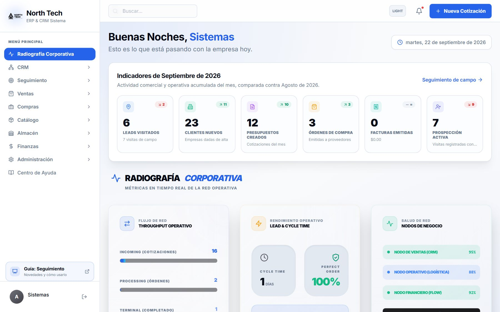
Facturación, utilidad bruta con margen, cuentas por cobrar y por pagar, saldo neto y tasa de conversión, todo en una pantalla. La tendencia de ventas contra compras y el pipeline por vendedor se grafican solos, y todo se exporta a Excel.
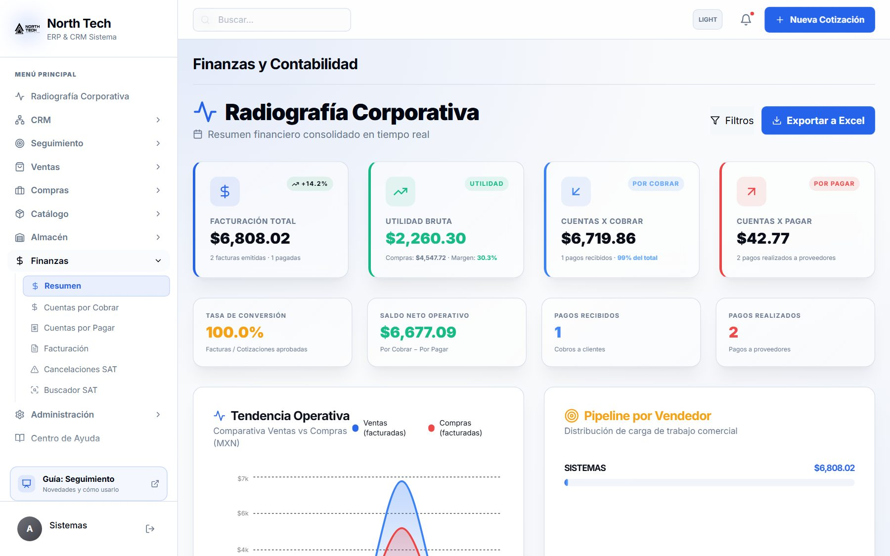
Contabilidad deja de conciliar hojas de distintas áreas. Cuentas por cobrar y por pagar salen de las mismas facturas y pagos que registra cada área.
Cada cotización aparece como tarjeta en su etapa (Cotización → Negociando → Ganada) con su monto, su avance y la siguiente actividad sugerida. Arriba se ve el valor total del pipeline y las actividades pendientes del día.
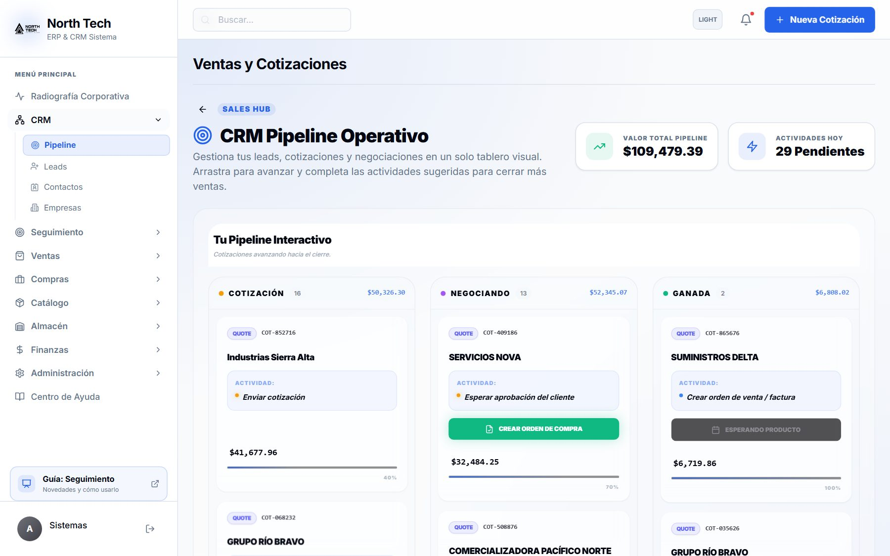
El cotizador aplica la fórmula de la empresa, Valor Real = (Precio base + Importación + Flete) × (1 + Utilidad %), y recalcula al instante cuando se mueve el margen. El IVA arranca en 8 % y se cambia a 16 % con un switch.
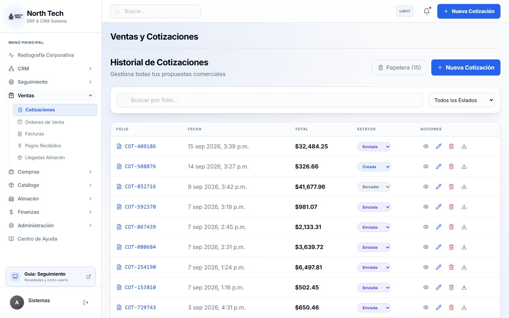
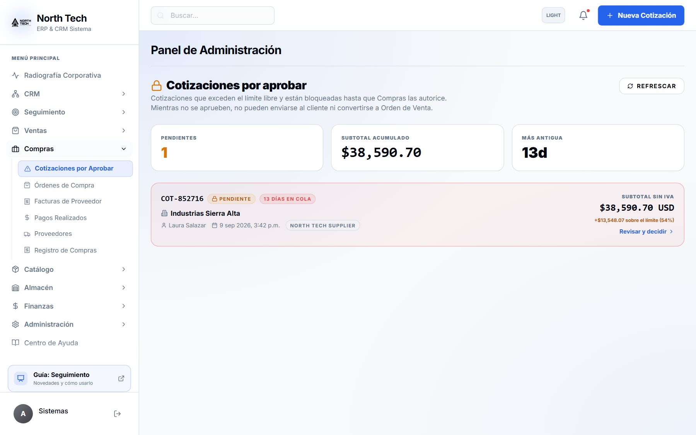
Si una cotización supera el límite libre (sin IVA), se bloquea: no se puede enviar al cliente ni convertir en orden de venta hasta que Compras o Dirección la apruebe. Si después se modifican las partidas, vuelve a la cola. Cada aprobación guarda quién la hizo y cuándo.
El sistema usa un modelo de IA de Google (Gemini) en ocho puntos concretos. En todos, la IA hace la captura o la búsqueda pesada y una persona revisa y confirma antes de guardar.
Lee la foto o PDF de lo que pide el cliente y crea las partidas.
Saca emisor, receptor, conceptos y totales de varias facturas a la vez.
Sugiere tres claves de producto/servicio SAT por concepto, con su justificación.
Propone la clave SAT de cada producto al armar una orden.
Llena RFC, razón social y domicilio del cliente o proveedor a partir de su constancia.
Lee el precio cotizado por el proveedor y después lo compara contra lo facturado.
Responde preguntas sobre tus cotizaciones y órdenes desde cualquier pantalla.
El equipo consulta ventas, compras e inventario desde su WhatsApp.
El copiloto solo contesta con los datos que el rol de esa persona ya puede ver, y tiene instrucción de no inventar indicadores. El asistente de WhatsApp no le da ningún dato a un número que no esté registrado como usuario.
El cliente manda una lista escrita, una foto del pizarrón o un PDF. El vendedor la sube con “Subir PDF / Imagen (IA)” y el sistema crea las partidas con cantidad, descripción y unidad. El vendedor solo agrega costos y margen.
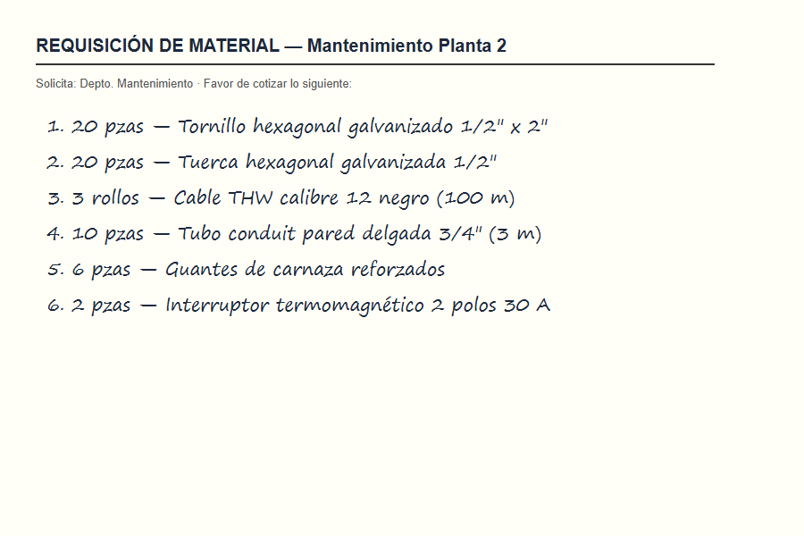
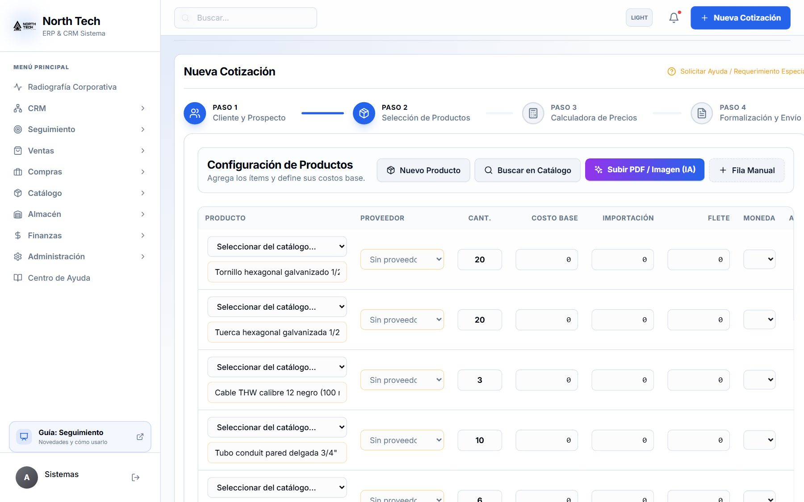
En Buscador SAT se sube una factura, ticket o cotización. La IA identifica cada concepto y propone las tres claves de producto/servicio más probables, con una explicación breve de por qué.
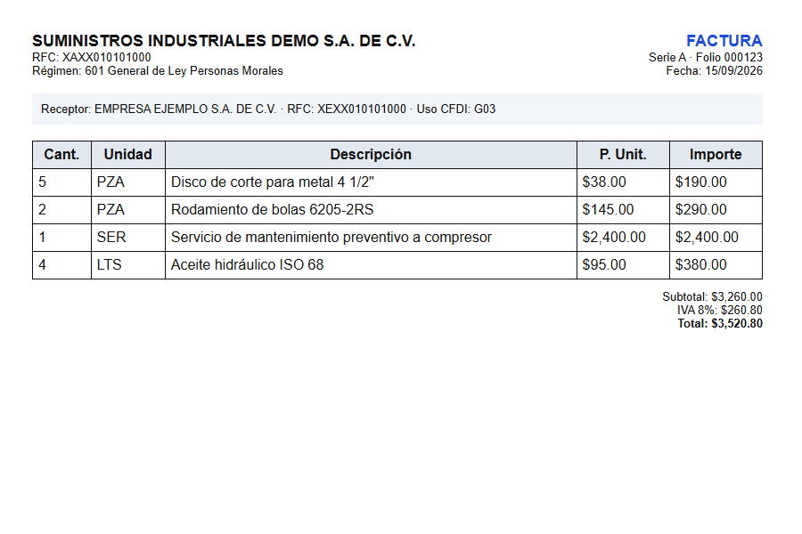
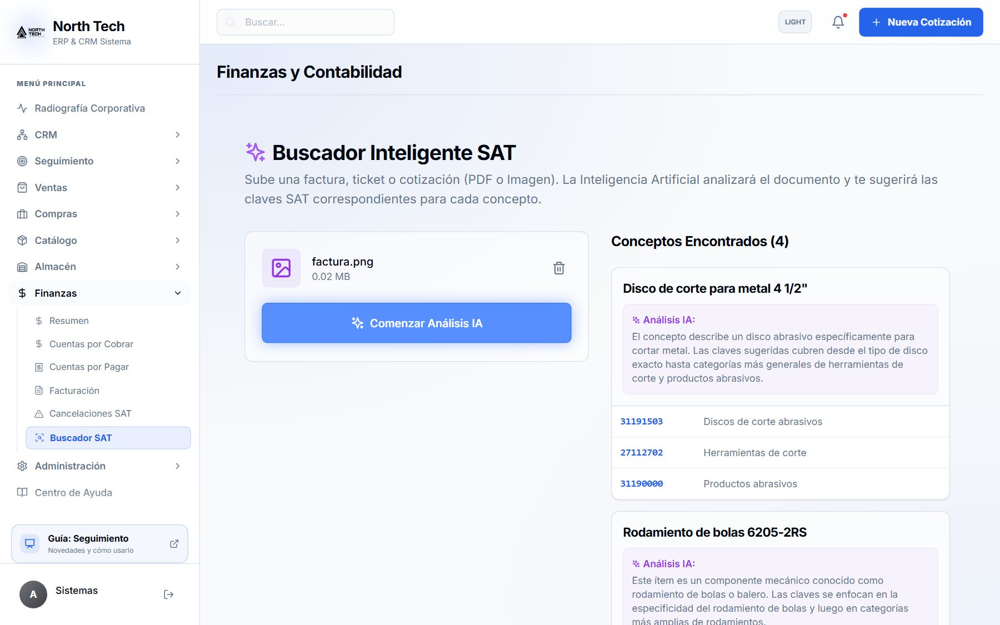
Contabilidad arrastra varias facturas (PDF o imagen) de clientes o proveedores y la IA extrae emisor, receptor, RFC, folio, fecha, moneda, conceptos y totales de todas en paralelo.
Al armar una orden, el sistema sugiere la clave SAT de cada producto a partir de su nombre, para que la factura salga bien desde el principio.
NORTH está disponible en todas las pantallas. Se le pregunta en lenguaje normal (“¿qué cotizaciones tengo pendientes?”, “¿cuál orden ya se entregó?”) y responde con los datos de tu perfil en ese momento.
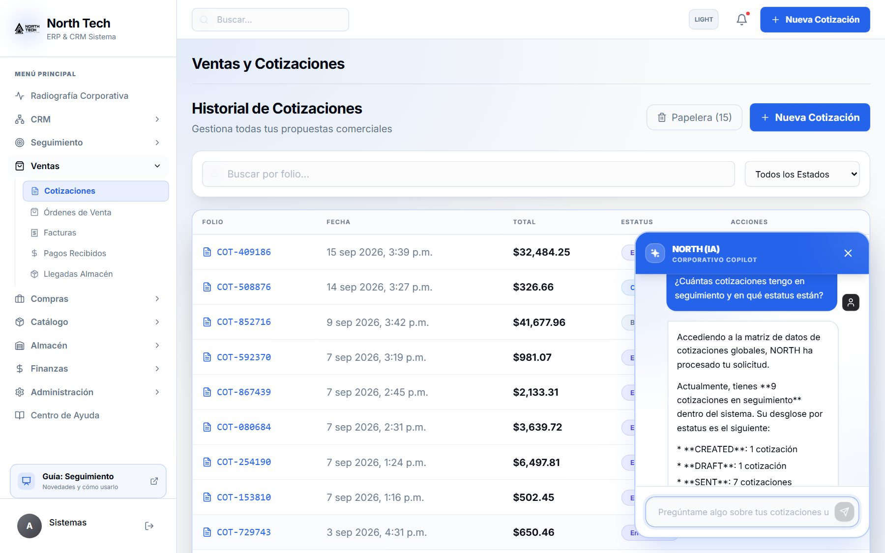
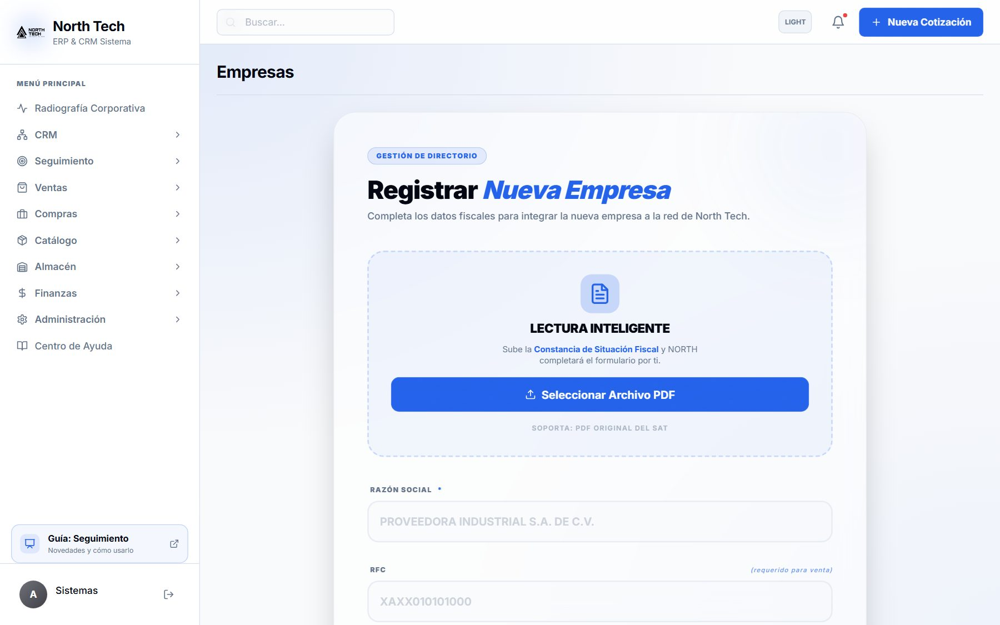
Cualquier persona con su WhatsApp registrado le escribe al número de la empresa y un asistente de IA le contesta con sus datos: estatus de sus órdenes y cotizaciones, productos bajo stock mínimo, órdenes de compra, aprobaciones pendientes o quién nos surte un material.
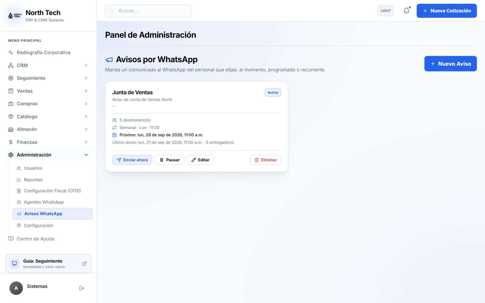
Se avisa al vendedor cuando su orden se entrega y a Compras cuando un producto baja de su mínimo.
Antes de cada cita o llamada agendada, el responsable recibe un recordatorio en su WhatsApp.
Avisos al personal: al momento, programados o recurrentes (por ejemplo, la junta semanal).
Cada visita se registra con objetivo, resultado, próximo paso y evidencia (GPS o foto). El tablero compara cada meta mensual contra lo que de verdad pasó: visitas, leads, citas, cotizaciones, clientes y ventas.
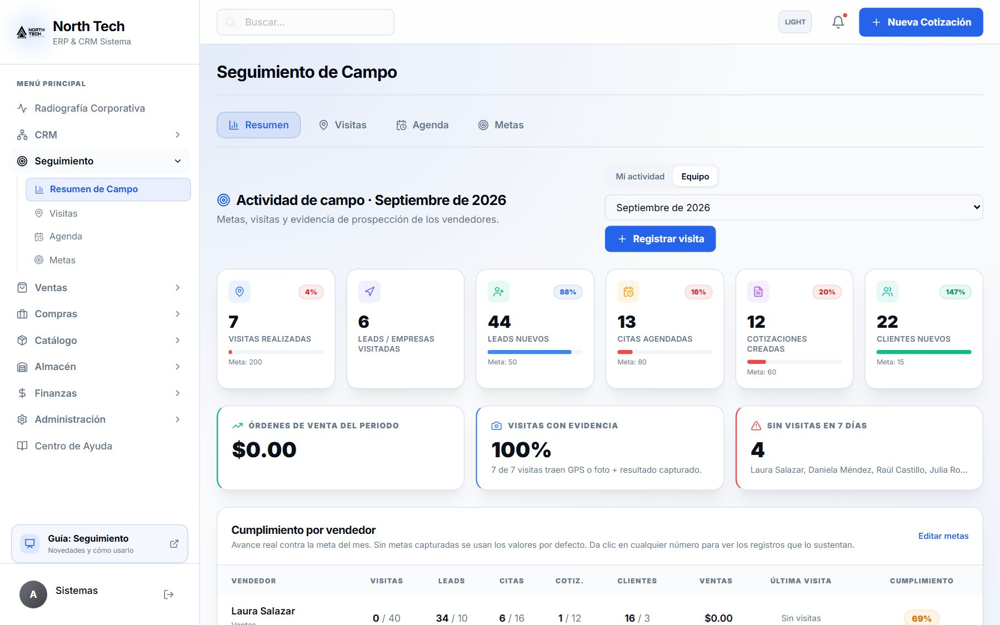
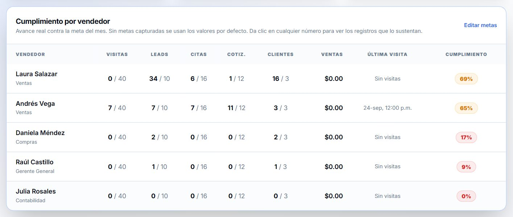
Leads, cotizaciones, clientes y ventas se cuentan desde los módulos donde realmente se crean, no desde lo que el vendedor marque. Los registros incompletos (visita sin evidencia, lead sin contacto, empresa sin RFC) se resaltan, así se detecta una carga masiva que no es prospección real.
Si una visita trae fecha de próximo paso, el sistema crea la cita o tarea automáticamente y la liga a la visita. Cerrar una tarea exige capturar su resultado, así ningún compromiso con un cliente se pierde.
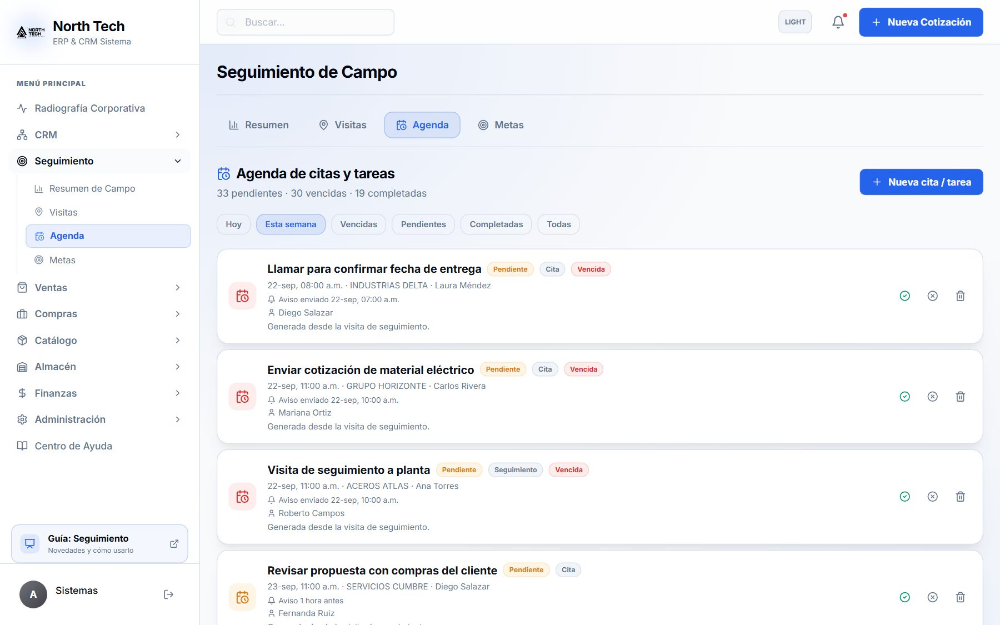
Cada proveedor lleva etiquetas con lo que nos vende (tornillería, ductos, empaque…). Al crear una orden de compra, la barra “¿Qué necesitas comprar?” filtra a los proveedores que surten eso.
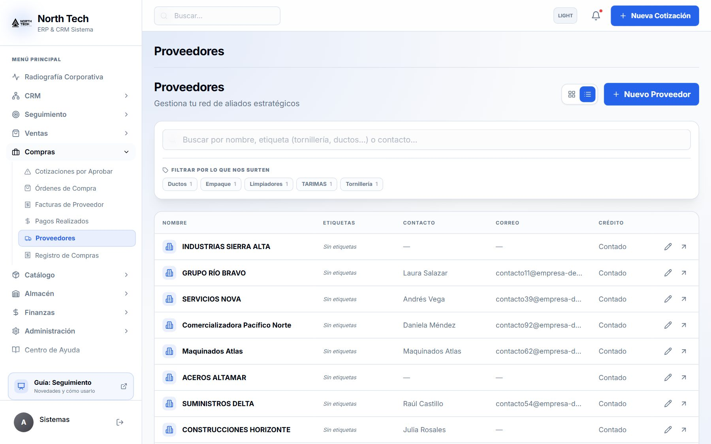
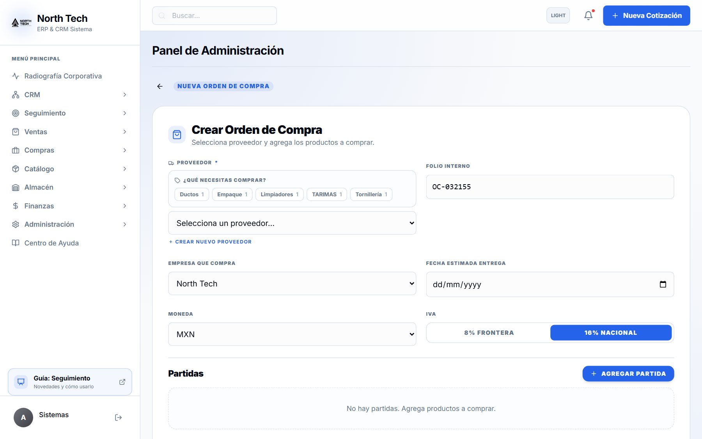
La orden de venta avanza de pendiente a entregada, con entregas parciales y remisión firmada. Cada entrega descuenta el stock en la misma operación que registra el movimiento, así el inventario y su historial siempre coinciden.
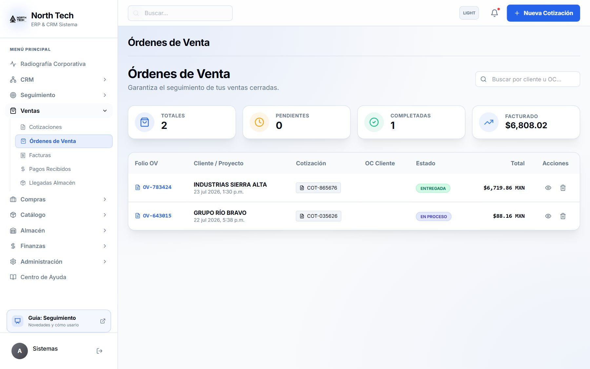
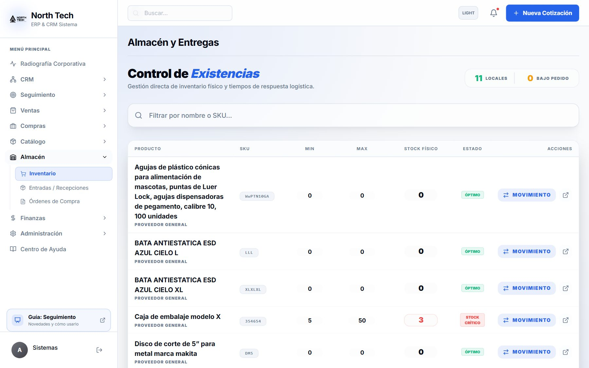
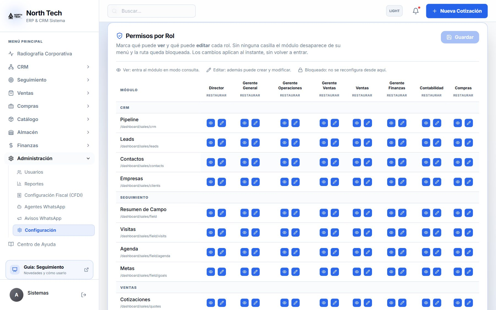
Cada cambio de estatus (cotización → orden de venta → entrega) guarda quién lo hizo y cuándo. Los movimientos de inventario y los pagos no se pueden editar ni borrar, salvo por un administrador.
El sistema junta en un solo lugar lo que antes estaba repartido entre archivos, correos y mensajes. La inteligencia artificial se encarga de la captura repetitiva y el análisis de datos muestra, sin esperar al cierre de mes, cómo va cada área y cada persona.
Cotizaciones, altas de clientes y facturas que antes se capturaban a mano ahora las lee la IA.
Aprobaciones con registro, permisos por rol y trazabilidad de cotización a entrega.
Indicadores en tiempo real, cumplimiento por vendedor auditable y un copiloto para preguntar.
Nombres y cifras de las capturas son ficticios para proteger la privacidad de nuestros clientes.